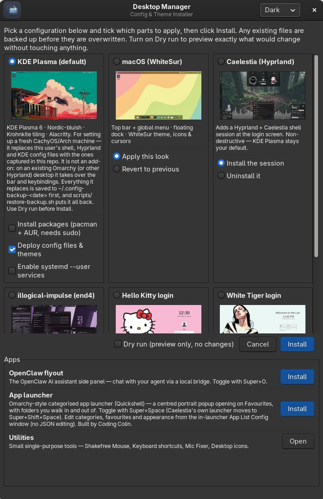

A self-contained snapshot of this machine's look and configuration, with a graphical picker to restore it on a fresh install. Choose a desktop configuration and which stages to deploy — with a dry-run option — and it runs the work in a terminal window so sudo prompts and live output still work. It also installs every tool on this page, and the Creative apps, from one Apps list.
files (no sudo), packages, services, sddmcollect.shBuilt for KDE Plasma 6 (Wayland) on Arch / CachyOS; the GUI is GTK and runs on any desktop.
git clone https://github.com/janszafranski/desktop-manager.git ~/system-replica
cd ~/system-replica
./scripts/install-launcher.sh # add “Desktop Manager” to your app menu
./scripts/gui.sh # …or just open the picker nowPrefer clicking? Everything here also installs from Desktop Manager › Apps. Each tool has an uninstall.sh beside its installer.